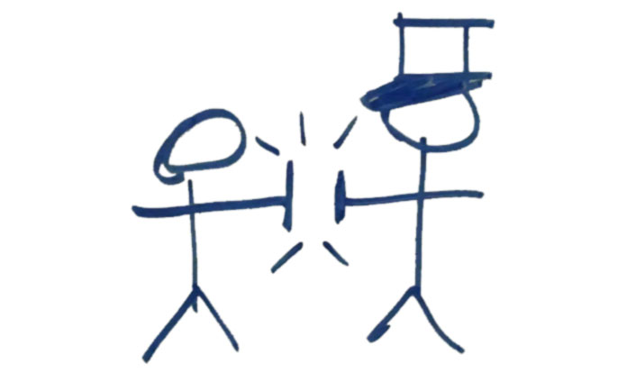
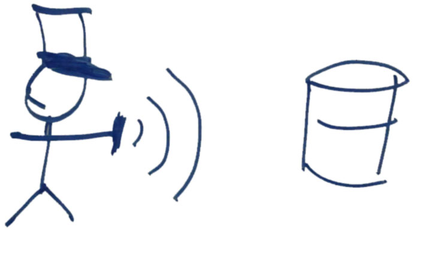
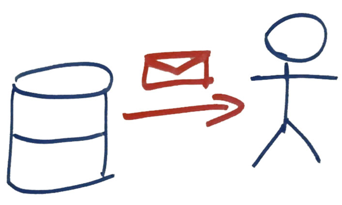
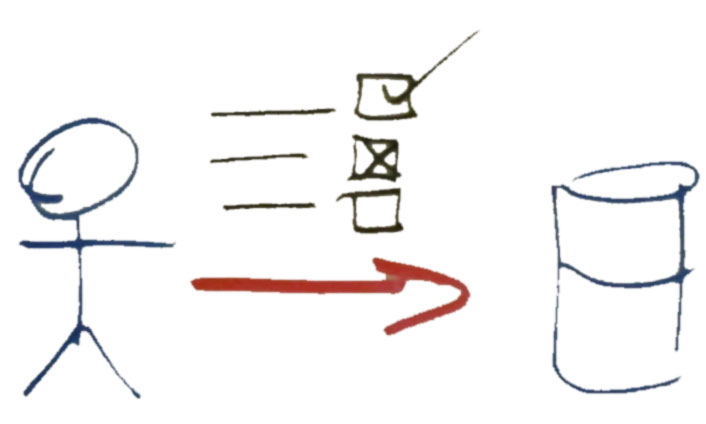
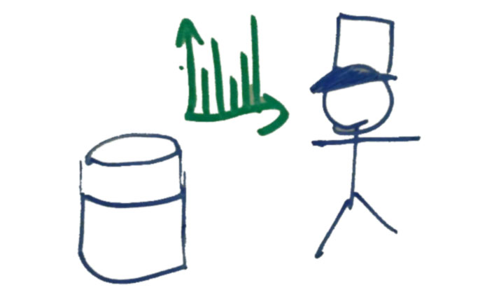

NFC Proposal
Imagine a BVN-DH hosted seminar on architecture styles in Sydney. There is a guest speaker giving the talk, a Futurum co-ordinator and around 15 BVN-DH employees attending, expecting to recieve Futurum credits.
The Futurum co-ordinator needs to:
- Identify every BVN-DH employee attending,
- Send every attendee an email with the relevant Epicor code and a link to a comprehension quiz,
- Grade and log the results of every comprehension quiz attempted.
How it looks
All the Futurum participants are given a special Futurum card. All the Futurum co-ordinators are given an app on their smartphones.
When a participant arrives at a seminar they present their card to the co-ordinator who uses the app to read it.
This automatically logs the attendance of the participant.

The system then sends the attending participants a comprehension quiz to be completed for bonus points after the seminar.
Upon completion of the quiz the results are automatically logged in the Futurum system.

Finally, both the participant and the final quiz score for every participant is available in a human and computer readable format. This allows the co-ordinator to share the score with the participant and Futurum to log the result and award points to participants.
Similar Systems
The experience would be similar to the video below.
How it works
There are three parts to this proposal:
-
The creation and distribution of NFC cards for each Futurum participant,
-
The creation of an Android NFC reader App for use by the Futurum co-ordinators,
-
A Futurum gmail account which will be used by the app to log attendance and quiz scores in Google Document files, as well as send out emails.
Benefits
There are many benefits to this approach. The important ones are:
- Low friction
- The process of logging attendance is painless for both the participant and the co-ordinator.
- Reduced errors
- By logging attendance with the NFC card and app we lessen the burden on the co-ordinator. Getting somebody's email wrong or forgetting to email a comprehension quiz are both impossible with this system.
- Cloud based
- Using Google Docs means our data is stored in the cloud. This removes the need for extensions to existing BVN-DH infrastructure.
- Automation
- By logging the data in a computer friendly format in Google Docs we are able to automatically perform operations on the data as it comes in. For example, Flubaroo is a free and open source script that will automatically grade the results of Google Docs spreadsheets. Because our data is automatically recorded we can also automatically grade the results, getting useful statistics and potentially even presenting these back to the participant as a report card.
Costs
In order to create this system there are some costs involved.
NFC Cards
An NFC card needs to be designed, printed and written to for each BVN-DH employee that will participate in Futurum. NFC cards are relatively modern but are fairly cheap to produce in the quantities we'll be working with.
Android App
An Android app needs to be developed to read NFC cards and send the result to a Google Spreadsheet. Such an app would be very simple in scope compared to most other Android apps. It's users would all be Futurum co-ordinators and all the parts to do with storing the results in Google Docs has already been tested by the QR Reader prototype.
Google Docs
Although side of the system has already been implemented it would be best to move it onto a Futurum Google Apps account instead of the private account it's currently on. If a Futurum Google Apps account does not already exist they can be cheaply purchased for $5/user/month. The users would only be Futurum co-ordinators, or possibly only the single account for all of the Futurum documents.
Conclusion
A method has been proposed for logging the attendance of BVN-DH employees attending Futurum seminars. In addition it also manages the emailing and grading of related comprehension quizes. It does this by reading identifying information on NFC enabled cards provided to BVN-DH employees participating in Futurum and automatically sending the data to a cloud storage. The proposed system is simple and composed of cheap components and works nicely with other task automation tools.